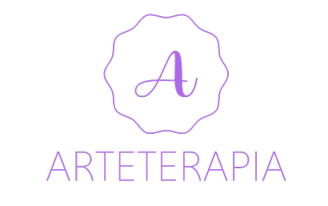
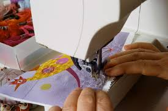

As atividades manuais são terapêuticas, ajudam a nos conectar com os processos mentais e trazem diversos benefícios à saúde.
Qualquer pessoa, de qualquer idade, pode se beneficiar das atividades manuais. As crianças, por exemplo, costumam ser incentivadas para desenvolver as funções motoras. Para os idosos é um ótimo exercício intelectual, pois trabalha funções do cérebro que, se não estimuladas, se degradam.
Justificando a realização das atividades manuais
Ao se concentrar profundamente em uma atividade, o nosso cérebro responde com fluidez no sistema nervoso, dissipando a tensão e melhorando a capacidade de concentração - daí a sensação de não perceber o tempo passar. É similar ao efeito da meditação: oferece paz e tranquilidade.
Conheça alguns benefícios dos trabalhos manuais para a saúde e bem-estar:

- Ajudam a minimizar os sintomas de estresse e depressão;
- Protegem o cérebro contra falhas de memória;
- Impulsionam o desenvolvimento cognitivo;
- Desenvolvem aptidões de coordenação entre sentidos: olho mão (capacidade de controlar o movimento da mão através da visão), percepção espacial, destreza motora;
- Fomentam a criatividade;
- Melhoram a autoestima;
- Proporcionam uma sensação de relaxamento e felicidade;
- Fortalecem o aprendizado;
- Promovem a constância e perseverança.